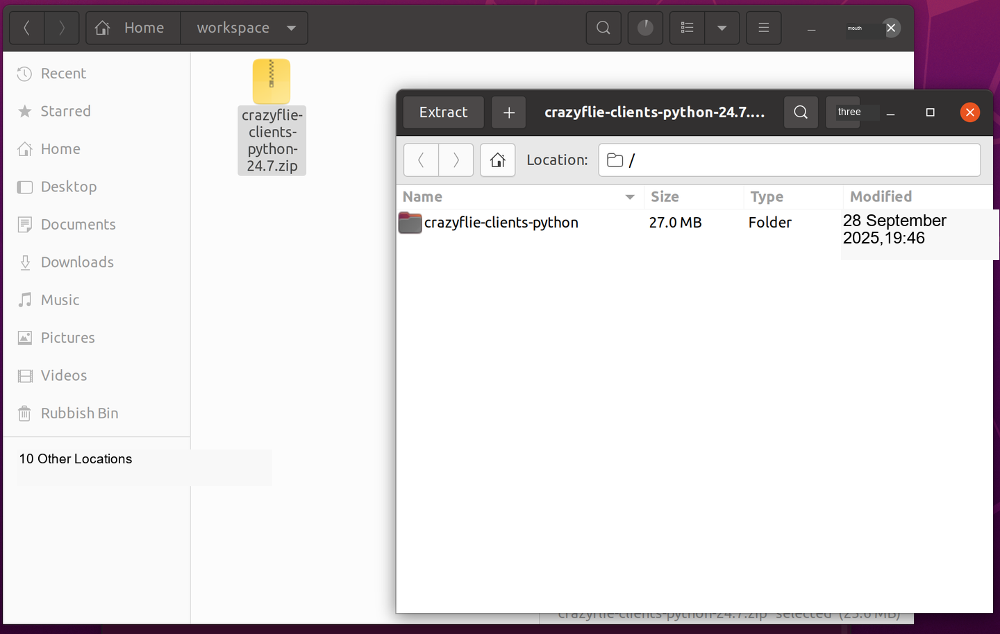
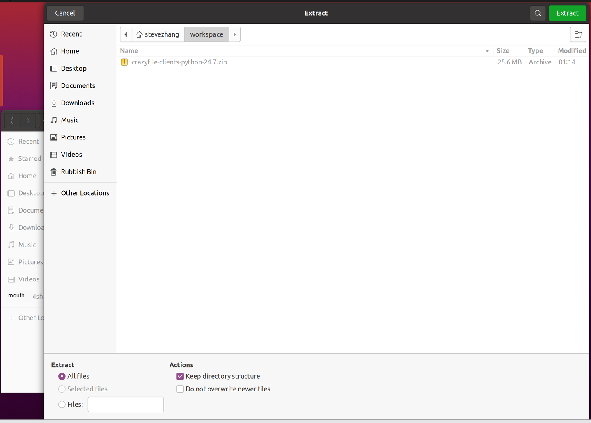
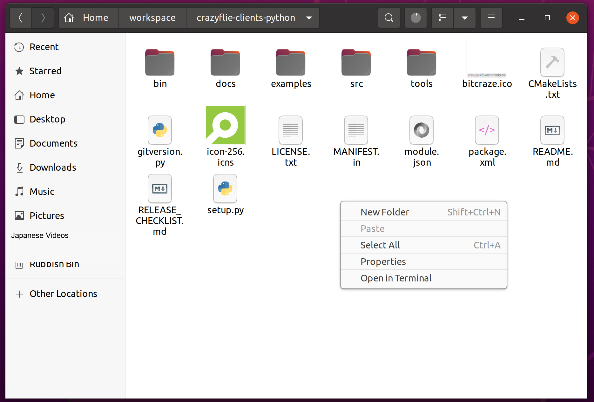
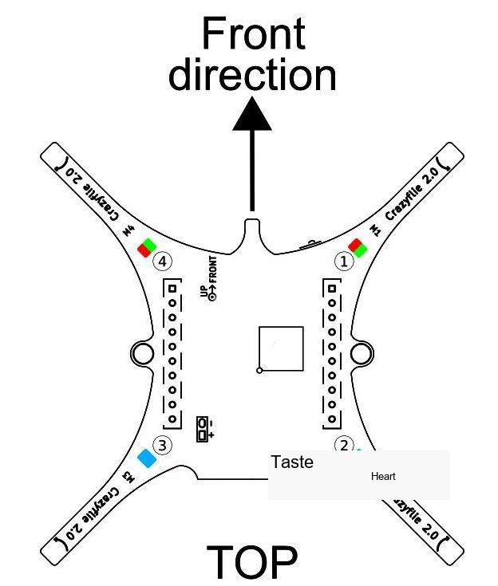
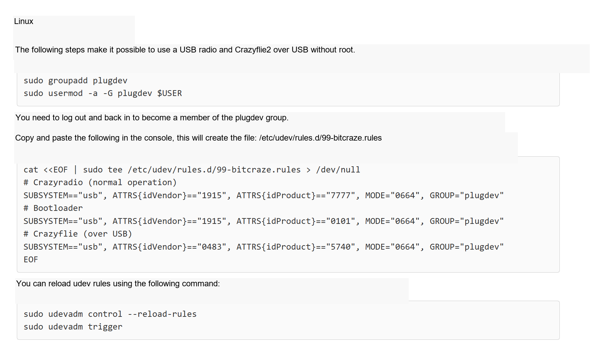
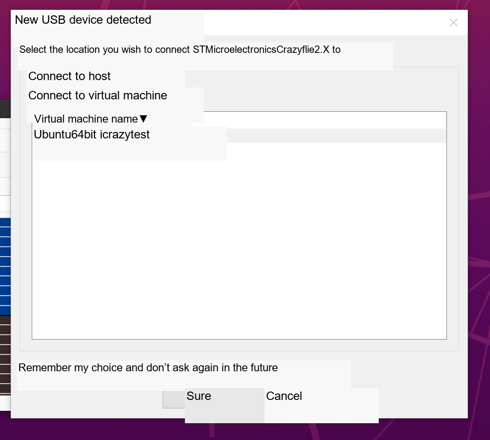
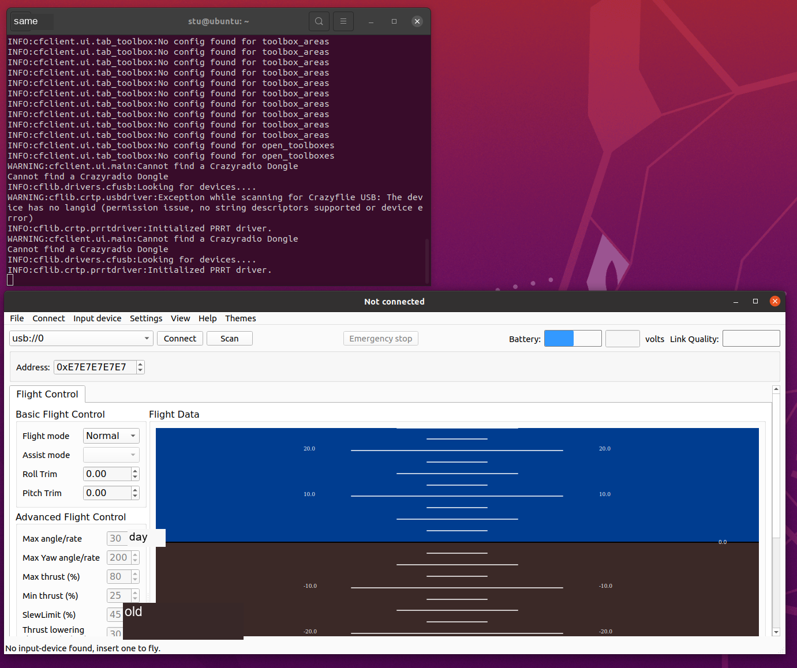
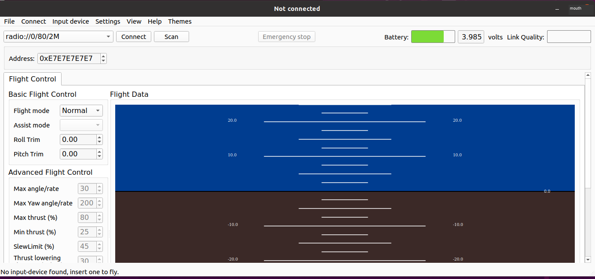
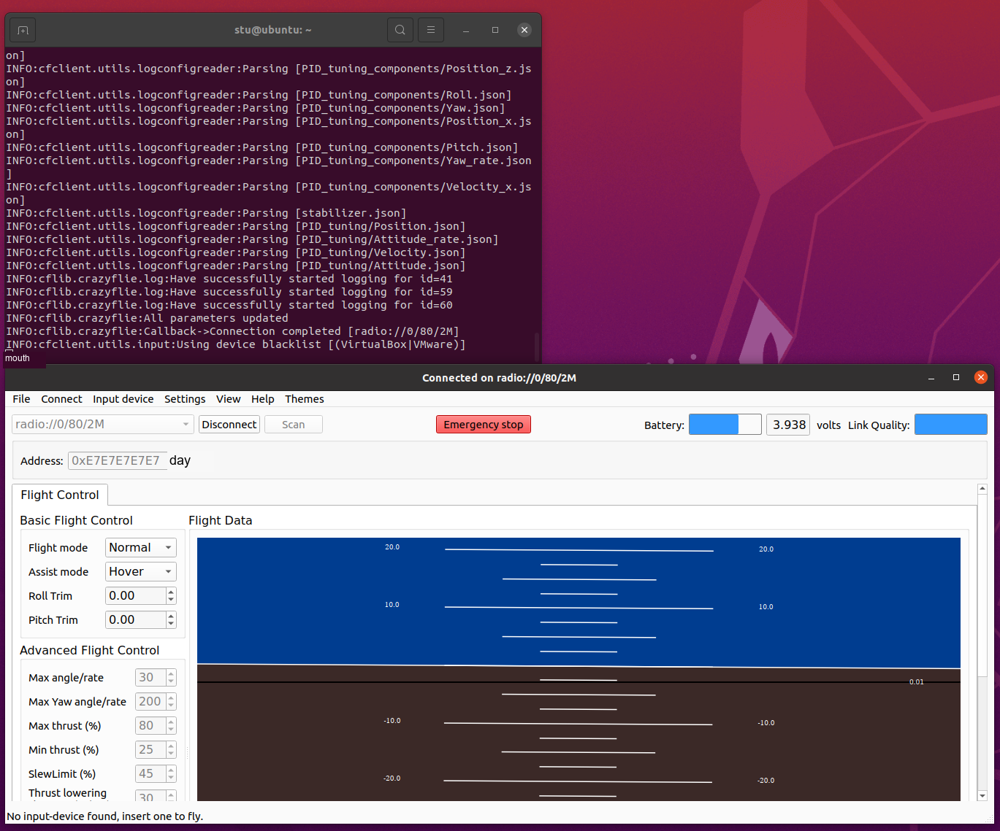
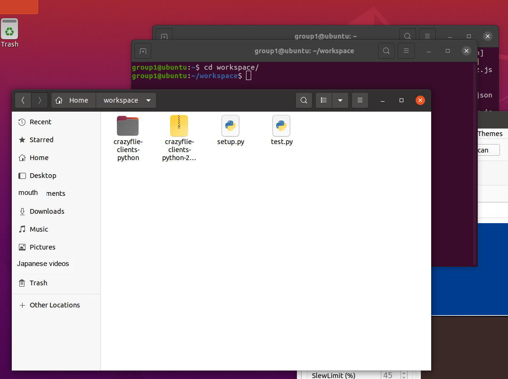

Experiment 3: Initial Crazyflie Configuration and Operation
Experimental goals
Configure the crazyfile-client software on the Linux virtual machine.
Get to know the structure of the crazyfile drone.
Use wired and wireless methods to connect the client of the virtual machine to the drone.
Use the example program to test fly the drone.
Experiment preparation
Experiment 2 has configured the Ubuntu20.04 virtual machine of ROS. And you need to have the Linux system operating experience accumulated in the previous experiments.
Experimental steps
Experiment 1: Copy the cfclient software installation package to the workspace folder of the virtual machine to perform the installation steps
Directly use the graphical operation method to drag the software package into the file interface of the Linux virtual machine from the file interface of the host windows.
Double-click the compressed package and click extract to extract it to the file directory.

At this point click the green extract button

Click to enter the decompressed directory, right-click on a blank space on the interface and select open in terminal to call out the terminal.

Then, first we install some necessary dependencies. First, copy and paste the following command directly into the terminal:
sudo apt-get install python3 python3-pip python3-pyqt5 python3-pyqt5.qtsvgPress the Enter key to enter the command, and then you may be asked to enter the user password to obtain permissions (the content and number of passwords entered during this process are not visible), and enter Y to continue the installation process.


Then enter the following commands to install other dependencies:
sudo apt install libxcb-cursor0 libxcb-xinerama0 libxkbcommon-x11-0
Then enter the following command to configure the software source downloaded by pip3:
pip3 config set global.index-url https://pypi.tuna.tsinghua.edu.cn/simple
Then enter the following command to update the software tool:
pip3 install --upgrade pip setuptools wheel

Finally, enter the following command to complete the overall software dependency installation:
pip3 install -e .After the installation is complete without errors, restart the virtual machine and enter the cfclient command. If the following interface appears, it means the environment configuration is installed successfully.

Experiment 2: Understand the basic structure of crazyfile drone
For specific basic drone cognition tutorials, please refer to this official website: Getting started with the Crazyflie 2.0 or Crazyflie 2.1(+) | Bitcraze
First, let’s get to know the basic components of a drone. Its basic parts are as follows:

Figure 1 Crazyflie drone parts
The Crazyflie 2. The chip board is as shown below. The chip board has four LED lights (M1, M2, M3, M4) used to display the drone status and error debugging. In the picture below, there are four colored dots with corresponding labels ①②③④. The M1 light is on the upper right, with red and green lights; the M2 light is on the lower right, with only blue lights; the M3 light is on the lower left, with only blue lights; the M4 light is on the upper left, with red and green lights.

Figure 2 Pay attention to the direction of the front direction and the four LED lights
Connect the Crazyflie 2.X chip board to the power supply with a USB cable. Pay attention to the LED lights M1 and M4. If M4 flashes green light 5 times quickly, the test passes.
How to understand the meaning of LED lights
Crazyflie 2.X If all good: blue LED lights M2 and M3 (the two lights below) will be blue (not flashing), and M1 will flash red light [2 times/second]
If Crazyflie 2.
Radio connected: M4 flashes red and/or green
Low battery: M1 will be red (not flashing)
Charging: M3 will flash blue light, while M2 will have blue light (not flashing)
Bootloader Mode: Both M2 and M3 flash blue lights, about 1 time/second
Self-test fails: If the M1 light flashes red 5 times quickly, and pauses for a period of time, and then flashes red light 5 times quickly, and then pauses for a period of time, and repeats this, it means that the self-test has failed. Note that self-test is different from the test before assembly (M4 will flash green light 5 times quickly, the test passes. If M1 light flashes red light 5 times quickly, it fails)
Experiment 3: Connecting the drone using wired and wireless methods
First, configure the permissions of the USB device in the Linux virtual machine. For detailed operations, you can refer to the tutorial on the official website:
USB permissions | Bitcraze

The specific operation is to enter the following commands in the terminal in the original directory:
sudo groupadd plugdev
sudo usermod -a -G plugdev $USER
Note that the following command is long, so ensure the integrity of the command when copying and pasting:
cat <<EOF | sudo tee /etc/udev/rules.d/99-bitcraze.rules > /dev/null
# Crazyradio (normal operation)SUBSYSTEM=="usb", ATTRS{idVendor}=="1915", ATTRS{idProduct}=="7777", MODE="0664", GROUP="plugdev"
# BootloaderSUBSYSTEM=="usb", ATTRS{idVendor}=="1915", ATTRS{idProduct}=="0101", MODE="0664", GROUP="plugdev"
# Crazyflie (over USB)SUBSYSTEM=="usb", ATTRS{idVendor}=="0483", ATTRS{idProduct}=="5740", MODE="0664", GROUP="plugdev"
EOF
Then enter the following command:
sudo udevadm control --reload-rules
sudo udevadm triggerAfter completing the above operations, enter the sudo reboot command to restart the virtual machine to apply the changes to the USB permissions.
Next, connect the drone to the computer using a UAB cable, and the following window will pop up to connect the USB device to the virtual machine.

Then click the scan button. The drone is detected as shown below. Select the option of usb://0 and click connect.

During the connection process, ensure that the drone is placed flat on the table so that it can initialize positioning devices such as gyroscopes. The appearance of the following interface indicates a successful wired connection. At this time, when you pick up the drone, you can see the changes in the attitude interface.
Next, we check the wireless address on the drone, remember this address, select copy, and paste it into the address column of the main interface. We will use crazyradio to connect to the drone wirelessly.

Remove the USB cable from the drone, plug it into crazyradio, and use the cfclient client to scan to the device. Make sure that the address in the address below is the wireless connection address of the drone you just viewed, and then click connect.

Also during the connection process, ensure that the drone is still and flat, so that it can initialize the attitude. The following interface will appear. Hold the drone in your hand, and if the attitude interface changes accordingly, the wireless connection is successful.

Experiment 4: Use a python script to make the drone take off autonomously
Core components
Flow Deck: The Flow Deck is a lidar ranging sensor board used to measure the height and distance of the Crazyflie drone from the ground. It can help drones achieve altitude positioning and stable hovering.

Make sure that the previous operation has allowed you to use crazyradio to connect to the drone wirelessly.

And after scanning crazyradio, remember its radio address, as shown in the picture: //0/80/2M

At the same time, put the python script to be run into the workspace folder, double-click the test.py script file to edit, modify the URI address on line 14 to be consistent with the current crazyradio address, click the save button after modification and exit.

Then install the last required dependency and enter the following command in the terminal:
pip3 install cflibThen enter the python3 test.py command in the terminal to run the script. After the script starts running, it waits for a period of initialization and sends instructions to the drone wirelessly. After receiving the instructions, the drone performs corresponding flight movements.
In addition, the official experimental tutorial website is: https://www.bitcraze.io/documentation/tutorials/getting-started-with-stem-drone-bundle/
The content of the test.py script is:
import logging
import time
import cflib.crtp
from cflib.crazyflie.syncCrazyflie import SyncCrazyflie
from cflib.positioning.motion_commander import MotionCommander
URI = 'radio://0/80/250K' #Change to your cf2's URI
# Only output errors from the logging framework
logging.basicConfig(level=logging.ERROR)
if __name__ == '__main__':
# Initialize the low-level drivers (don't list the debug drivers)
cflib.crtp.init_drivers(enable_debug_driver=False)
with SyncCrazyflie(URI) as scf:
# We take off when the commander is created
with MotionCommander(scf) as mc:
print('Taking off!')
time.sleep(1)
# There is a set of functions that move a specific distance
# We can move in all directions
print('Moving forward 0.5m')
mc.forward(0.5)
# Wait a bit
time.sleep(1)
print('Moving up 0.2m')
mc.up(0.2)
# Wait a bit
time.sleep(1)
print('Doing a 270deg circle');
mc.circle_right(0.5, velocity=0.5, angle_degrees=270)
print('Moving down 0.2m')
mc.down(0.2)
# Wait a bit
time.sleep(1)
print('Rolling left 0.2m at 0.6m/s')
mc.left(0.2, velocity=0.6)
# Wait a bit
time.sleep(1)
print('Moving forward 0.5m')
mc.forward(0.5)
# We land when the MotionCommander goes out of scope
print('Landing!')Organizing link information
This section organizes external links that appear in the manual into bullet points that are readable offline. To prevent the material from being too long, the web content is summarized in the form of classroom purposes and key tips, and the original URL is retained for reference after class.
1. Tsinghua University PyPI mirror source
Original link: https://pypi.tuna.tsinghua.edu.cn/simple
Classroom use: Used to improve the speed and stability of pip downloading Python dependencies.
• The purpose in the manual is to set the pip index-url so that cflib, GUI client and related dependencies download faster.
• Commonly used commands are: pip3 config set global.index-url https://pypi.tuna.tsinghua.edu.cn/simple
• The link itself is the software package index entry, not the tutorial page; only keep the purpose description for offline materials.
2. Getting started with the STEM drone bundle | Bitcraze
Original link: https://www.bitcraze.io/documentation/tutorials/getting-started-with-stem-drone-bundle/
Class use: Learn about the Crazyflie kit components, charging, connections, and first flight process.
• Corresponds to hardware identification, Crazyradio connection, client startup and basic test flight in the classroom.
• Focus on batteries, paddles, expansion boards, wireless connectivity and safety checks.
• Classroom practice is still subject to the device number, firmware status and site safety requirements provided by the teacher.
3. Getting started with Bitcraze Crazyflie 2.x (Webpage title: Getting started with the Crazyflie 2.0 or Crazyflie 2.1(+) | Bitcraze)
Original link: https://www.bitcraze.io/documentation/tutorials/getting-started-with-crazyflie-2-x/
Classroom Purpose: Supplementary Crazyflie 2.x connection, firmware, client, and pre-flight check instructions.
• Suitable for checking Crazyflie 2.0/2.1 series hardware and client operation logic.
• It is recommended to focus on the connection process, client status feedback, firmware update reminders and flight safety tips.
• If the classroom device has been pre-configured, it is not recommended that students update the firmware themselves.
4. Bitcraze USB permission configuration (webpage title: USB permissions | Bitcraze)
Original link: https://www.bitcraze.io/documentation/repository/crazyflie-lib-python/master/installation/usb_permissions/
Classroom Purpose: Solve the problem that ordinary users in Linux virtual machines or hosts cannot access Crazyradio USB devices.
• When Crazyradio cannot be discovered by a Python script or client, prioritize checking USB connections, virtual machine USB routing, and permission rules.
• Under Linux, it is usually necessary to add udev rules and replug and unplug the device or restart related services.
• If permissions have been configured by the teaching assistant in class, students only need to follow the troubleshooting checklist to confirm that the device can be recognized.